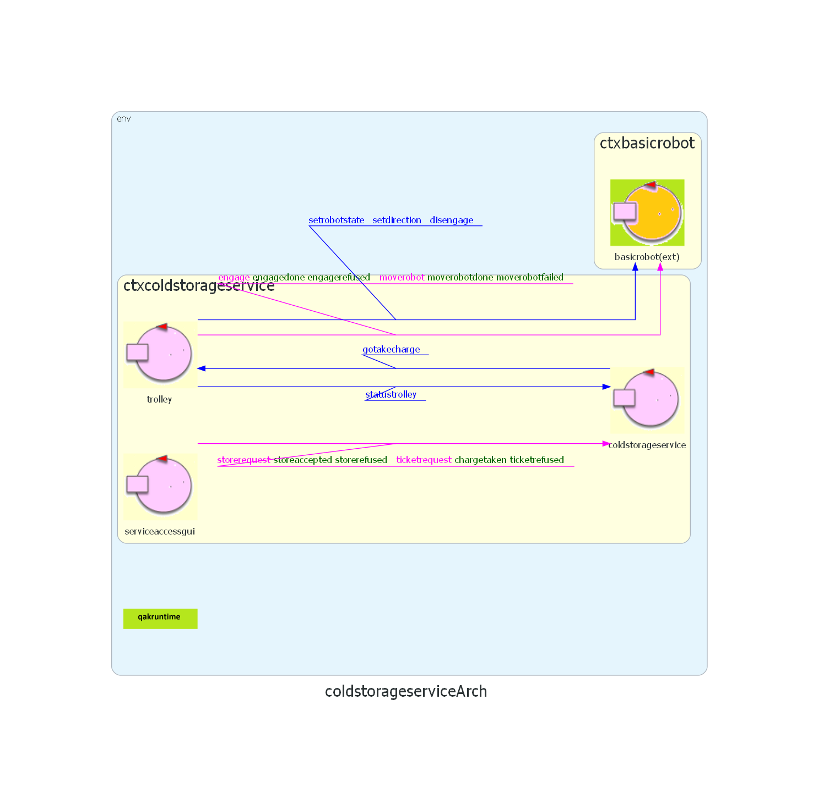
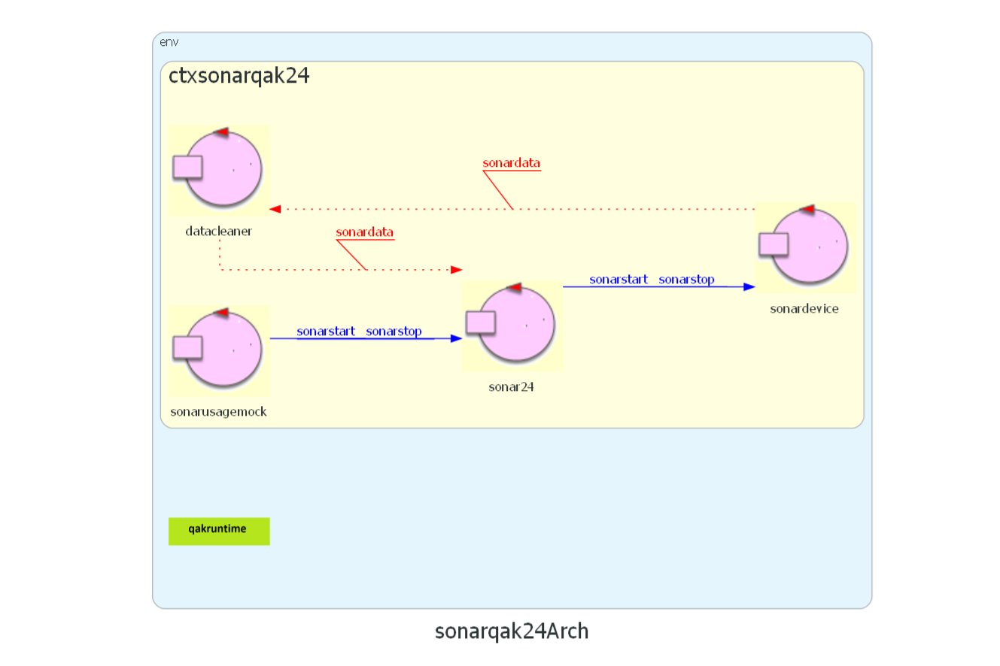
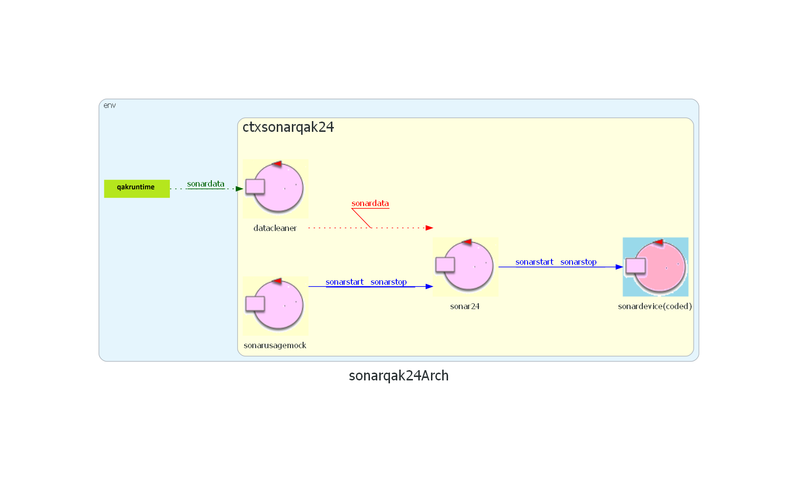

Sprint 1: lo Sprint 1 si è occupato della realizzazione del core dell'applicazione. Si è concluso con la realizzazione di un prototipo con la seguente architettura logica:

User stories: in questo Sprint sarà analizzato il keypoint 5, relativo ai
Nello
Sia il
Il sistema avrà due contesti diversi:
ctxcoldstorageservice (porta 8015): contiene il ctxalarms (porta 8025): contiene
Il committente fornisce il progetto sonarqak24:


L'attore
Al sonar, sulla base del principio di singola responsabilità, si affianca l'attore
Da requisiti, il LED modifica il proprio stato sulla base dello stato corrente del trolley:
Il committente fornisce inoltre una serie di funzioni Python SonarAndLed.py per la gestione delle operazioni e la configurazione dei dispositivi.
Nella fase iniziale di sviluppo, si è scelto di simulare i dispositivi fisici per facilitare la realizzazione di un primo prototipo funzionante dell'applicazione.
Per il sonar, è stato definito un
obstacle quando la distanza misurata è minore e free quando il valore aumenta
L'attore
[# subscribeToLocalActor("sonar") #]
obstacle, free, distance
Il LED è implementato dalla classe ledSimulator.kt
L'attore
observeResource trolley msgid statustrolley si registra come statustrolley quando il trolley aggiorna lo stato
Il trolley mantiene traccia del proprio stato per poter gestire correttamente stop e resume
CurrentStatus: stato corrente del trolleyOldStatus: stato precedente allo stop, per ripartire alla ricezione di resume
stopped: flag che indica se il trolley è fermo o no
Il trolley può ricevere un messaggio di
alarm : alarm( X )
stoptrolley al coldstorageserviceCurrentStatus in OldStatusCurrentStatus = "stopped", stopped = truealarm per fermare il movimento fisico del basicrobot
resumetrolley al coldstorageserviceOldStatusstopped = false